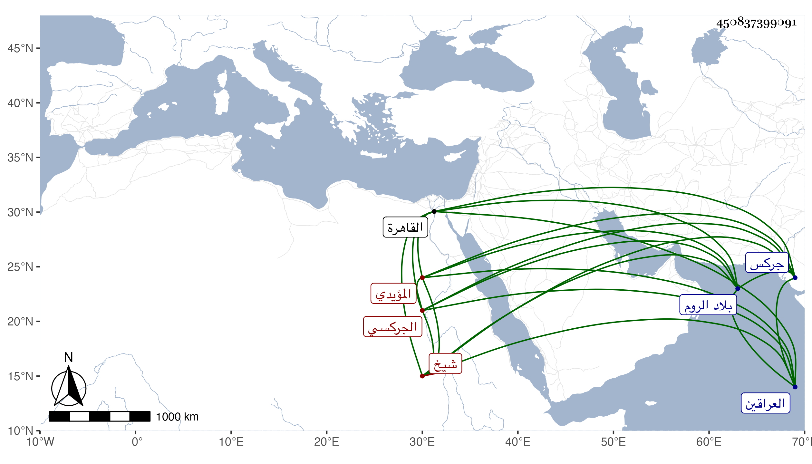

0902Sakhawi.DawLamic.ITO20230111-ara1.EIS1600.450837399091
Biography ID: 450837399091
695
قانم من صفر خجا الجركسي المؤيدي شيخ ويعرف بالتاجر . اشتراه المؤيد في سلطنته فأعتقه وصيره من المماليك السلطانية ثم صار خاصكيا في أيام ابنه إلى أن أرسله الأشرف لبلاد جركس لإحضار أقاربه فتوجه ثم عاد في حدود سنة ثلاثين فأقام دهرا ثم صار من الدوادارية الصغار ثم تأمر عشرة في أيام العزيز ثم تأمر على الركب الأول غير مرة وتوجه في الرسلية لمتملك الروم ثم لمتملك العراقين ثم جعله إينال من أمراء الطبلخاناه ، ثم قدمه ثم صار في أيام المؤيد رأس نوبة النوب ثم جعله خجداشه الظاهر خشقدم أمير مجلس ، وعظم جدا ونالته السعادة وقصد في الحوائج وشاع ذكره ، وعمر الأملاك الكثيرة بل أنشأ مدرسة على ظهر الكبش بالقرب من جامع طولون وتربة بالصحراء خارج القاهرة وصار أتابك العساكر . ولم يزل في ازدياد حتى مات فجأة في صفر سنة إحدى وسبعين حين دخوله الخلاء وتحدث الناس في كونه مسموما وفي غير ذلك وجهز وأخرج من داره المجاورة للزمامية في سويقة االصاحب حتى صلي عليه بمصلى المؤمني بحضرة السلطان فمن دونه ودفن بتربته وقد قارب السبعين . وكان طوالا تام الخلقة مليح الوجه كبير اللحية أبيضها ضخما مهابا وقورا ذا سكينة معظما في الدول قليل الكلام طالت أيامه في السعادة ولم يرتق لما كان يحدث به نفسه هو وأصحابه وله بجاهه الشرف المناوي مزيد العناية رحمه الله وعفا عنه .
